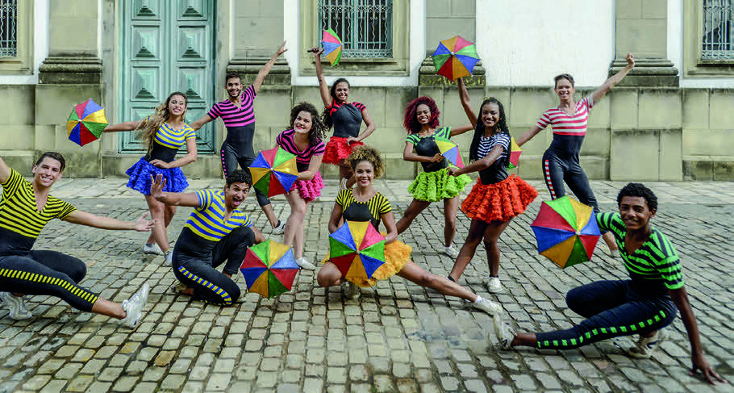

Aproveite as atividades da seção “Trocando ideias” para explorar detalhes da imagem de abertura que tenham passado despercebidos.
Auxilie os estudantes a perceber que conhecimento de vida também é parte da cultura.
É fundamental incentivar os estudantes a se colocar, realizar a escuta ativa e valorizar as contribuições deles.
Com base no tópico “Manifestações culturais no Brasil”, dialogue sobre as referências culturais dos estudantes.
Peça-lhes que comentem os costumes do local em que nasceram, as comidas típicas, as festas, as heranças dos mais velhos e como brincavam ou brincam.
Ouça os exemplos dados e valorize a participação deles.
Ao incentivar os estudantes a expressar as próprias vivências culturais, promove-se a valorização da identidade individual e coletiva.
TROCANDO IDEIAS
OBSERVE A IMAGEM DE ABERTURA DO CAPÍTULO E CONVERSE COM OS COLEGAS.
1)
O QUE AS PESSOAS ESTÃO FAZENDO?
Elas estão acompanhando um bloco de rua no Carnaval e interagindo em meio a uma multidão.
2)
VOCÊ CONHECE O BLOCO GALO DA MADRUGADA OU OUTRO BLOCO DE RUA QUE SE APRESENTA NO CARNAVAL? QUAL?
Resposta pessoal.
3)
QUAIS SÃO OS ELEMENTOS CULTURAIS TRADICIONAIS QUE CARACTERIZAM O CARNAVAL NA REGIÃO ONDE VOCÊ VIVE?
Resposta pessoal.
4)
QUAL É A IMPORTÂNCIA DA MÚSICA PARA O CARNAVAL?
A música cria a atmosfera festiva do Carnaval, permitindo que as pessoas dancem e cantem.
5)
DE QUE MANEIRA O CARNAVAL INFLUENCIA A IDENTIDADE CULTURAL BRASILEIRA?
Resposta pessoal.
MANIFESTAÇÕES CULTURAIS NO BRASIL
AS MANIFESTAÇÕES CULTURAIS SÃO REPRESENTAÇÕES DA CULTURA DO POVO TRANSMITIDAS DE UMA GERAÇÃO PARA OUTRA OU APRENDIDAS NO CONVÍVIO ENTRE AS PESSOAS.
ELAS PODEM SER EXPRESSAS POR MEIO DE MÚSICAS, RITUAIS, FESTAS, DANÇAS, COMIDAS, ENTRE OUTRAS FORMAS DE EXPRESSÃO.
NO BRASIL, O CARNAVAL É UMA DAS FESTIVIDADES CULTURAIS MAIS IMPORTANTES.
AS ESCOLAS DE SAMBA, OS BLOCOS DE RUA E A COMEMORAÇÃO DOS FOLIÕES REFLETEM A IDENTIDADE NACIONAL COM ELEMENTOS HISTÓRICOS E SOCIAIS.

GRUPO DE PASSISTAS DE FREVO NO CAIS DA ALFÂNDEGA, EM RECIFE, PERNAMBUCO. FOTOGRAFIA DE 2018.
Leo Caldas/Pulsar Imagens
Converse com os estudantes sobre o Tema Contemporâneo Transversal (TCT) Multiculturalismo: Diversidade cultural e explique que ele se refere à valorização e ao respeito pela multiplicidade de culturas presentes em uma sociedade.
Esse conceito reconhece que diferentes expressões culturais, crenças, tradições e costumes enriquecem a identidade de um povo e devem ser preservadas e celebradas.
Proponha aos estudantes que pesquisem sobre as diferentes manifestações culturais existentes em sua comunidade ou região.
Isso pode incluir festas, danças, músicas, culinária, artesanato, entre outros aspectos.
Reserve o momento para a socialização dos resultados da pesquisa.
Com base na imagem, converse com os estudantes sobre a dança.
Pergunte se entendem o que significa Patrimônio Cultural Imaterial da Humanidade.
Se julgar oportuno, visite o site do IPHAN (disponível em: http://portal.iphan.gov.br/pagina/detalhes/71, acesso em: 29 abr. 2024).